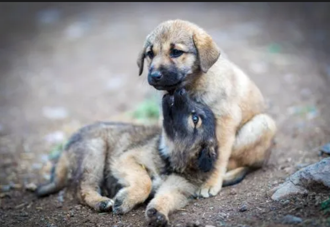

Resgate
Acolhemos animais que precisam de proteção e cuidados.
A Amor Animal trabalha para resgatar, cuidar e encontrar lares responsáveis para animais que precisam de uma nova oportunidade.

Nosso objetivo é oferecer proteção, cuidados veterinários, alimentação e uma nova oportunidade para animais abandonados ou vítimas de maus-tratos.
Acolhemos animais que precisam de proteção e cuidados.
Oferecemos alimentação, vacinação e acompanhamento.
Buscamos famílias responsáveis para cada animal.
Cada um possui uma história diferente e merece uma família cheia de carinho.

Carinhoso, brincalhão e muito companheiro.

Dócil, carinhosa e muito curiosa.
Você pode adotar, ser voluntário, contribuir com doações ou simplesmente compartilhar nosso trabalho.
Quero participarEntre em contato para saber mais sobre adoção, voluntariado ou doações.
Os dados de contato acima são demonstrativos e devem ser substituídos pelos contactos reais da organização.